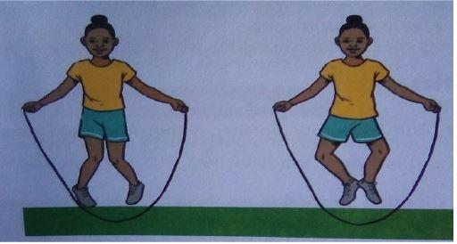
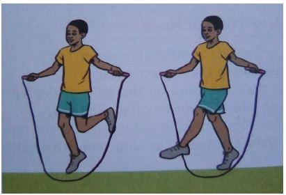
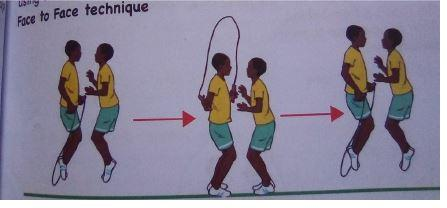
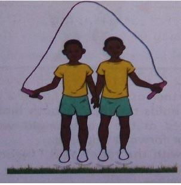

Wounded Duck
The wounded duck is a technique which involves rope skipping with toes touching and heels apart, then heels touching and toes apart.
Safety Instructions
- Wear comfortable shoes
- Use the correct grip and rope size
- Skip the rope on a flat and smooth surface
- Keep a safe distance from other skippers
- Use the correct skipping technique and maintain the correct posture
- Warm up before and cool down after skipping
- Land with the balls of the feet
- Jump 0.5cm off the ground
- Make sure you have enough space
- Generate the jump rope rotation using the wrists. Do not throw arms wide
Warm Up Activities
- Tagging a partner - Look for a partner. Run with your partner within a marked area and try to tag each other.
- Leg swing - Start from a standing position. Keep the left leg stationary on the ground. Slowly swing the right leg forward and backward while keeping it straight. Then change and swing the left leg.
- Beckoning - Stand with both feet comfortably apart. Stretch both arms forward. Open and close the fingers continuously. Then stretch the arms sideways and then upwards.
Cool Down Activities
- Light walking - Walk slowly around the marked area.
- Arm swing - Stand with feet comfortably apart. Bend the body forward and swing arms slowly to the left and to the right.
Learning Points
- Jump over the rope and land with your toes and knees inwards and your heels apart.
- Jump over the rope and land with your toes and knees outward and your heels touching.
- Alternate toes touching (toes in) and heels touching (toes out). Keep on alternating toes in, toes out to create a rhythm.
Swing Kick
The swing kick is a technique which involves swinging the foot backward and then kicking it forward as you skip with a rope.
Safety Instructions
- Ensure you are wearing comfortable shoes
- Skip while maintaining the correct posture
- When skipping the rope, land on the balls of the feet
- Warm up before and cool down after skipping
- Generate the rope rotation using the wrists. Do not throw your arms wide
Warm Up Activities
- Tagging a partner - Look for a partner. Run with your partner within a marked area and try to tag each other.
- Leg swing - Start from a standing position. Keep the left leg stationary on the ground. Slowly swing the right leg forward and backward while keeping it straight. Then change and swing the left leg.
- Arm circles - Put your arms out straight out to the side. Start by making small circles with your arms, then slowly progress to larger circles.
Cool Down Activities
- Light walking - Walk slowly and leisurely around the marked area.
- Arms and legs shake - Gently shake your right arm, then your left arm. Then shake both arms at the same time. Then shake your right leg, and then your left leg.
Learning Points
- Jump over the rope, landing on your right foot and swing your left foot back.
- Jump over the rope, landing on your right foot again and kick your left foot forward.
- Jump over the rope, landing on your left foot and swing your right foot back.
- Jump over the rope, landing on your left foot again, and kick your right foot forward.
- Maintain the rhythm of back-kick-back-kick with the feet.
Partner Work
Partner work in rope skipping involves skipping the rope with a partner. The partners face the same direction or different directions as they skip the rope together. One partner may hold the rope, or both may hold as they skip.
Techniques
-
a. Face to Face Technique
Involves partners facing each other as they skip the rope.
 -
b. Back to Back Technique
Involves partners standing back to back as they skip the rope.

-
c. Side by Side Technique
Involves partners standing side by side as they skip the rope.

Warm Up Activities
- Partner tag - In pairs, stand one meter away from each other. On the command "go," one partner tries to tag the other one. Keep changing roles.
- Star jump - Start in a crouching position, hands by your ankles. Leap into the air, throwing your arms and legs out in a star shape. As you land, return the hands and feet to the starting position. Repeat the exercise three times.
- Back and side stretch - Stand upright facing forward. Raise your hands up towards the sky, join your fingers, and keep the elbows straight. Bend back as far as possible, then slowly to one side. Hold the stretch for a few seconds. Go back to the starting position and change sides.
Safety Instructions
- Choose an appropriate rope
- Make sure you are skipping in an open, flat, and safe space
- Maintain correct rope skipping technique
- Generate the rope rotation using the wrists. Do not throw your arms wide
- NOTE: During partner work
- Use a skipping rope that is slightly longer than your usual single rope.
- The partner with the rope during the face to face and back to back techniques should make larger arm circles than usual to include the other jumper.
- Remember to maintain the correct distance.
- Try to keep the same rhythm and speed with your partner.
- Communicate with your partner.
Learning Points
Face to Face Technique
- Stand facing your partner
- One partner to hold the rope in both hands
- Arms should be placed at the waist height with the rope behind the turners' feet, ready for forward skipping.
- The turner (the one with the rope) calls "ready, set, go" and swings the rope up from behind.
- Both of you jump together
- Switch roles
Back to Back Technique
- Stand with your partner back to back
- One partner holds the rope in both hands
- The turner (the one with the rope) calls "READY, SET, GO" and swings the rope up from behind
- Both of you jump together
- Switch roles
Side by Side Technique
- Stand side by side facing forward with your partner
- Each of you holds the rope with the outside hand
- One partner calls "READY, SET, GO"
- Both of you turn the rope from behind and jump together